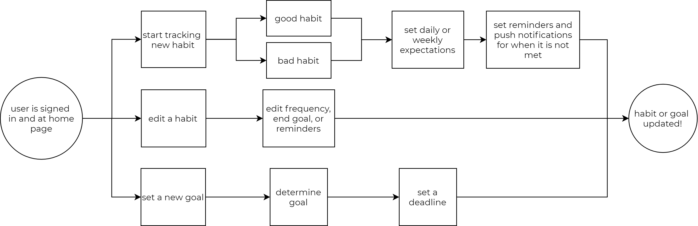
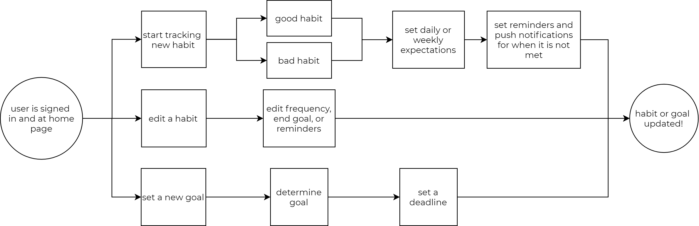

You in Review
You in Review is an interactive lifestyle tracker that helps the user keep good habits by using push notifications to actively remind the user to stay on track.
Whether the user is trying to start a new good habit or kicking a bad one, You in Review uses an aesthetically pleasing interface with detailed insights and data to keep the user engaged and motivated. As someone who is into fitness and trying to maintain a healthier lifestyle, I was happy to design and develop a tool to help keep better habits.
Problem
I wanted to create a more universal lifestyle tracker instead of having multiple trackers designed for just one or a few habits. In order to show progress, I wanted it to be able to help the user consistently track, but doing so without overflowing the user with notifications. The app should be clean and simple, yet motivating in a way to have it seamlessly integrated into their lifestyle.
Solution
I wanted the app to be aesthetically pleasing enough to appeal to and motivate the user by using color. The more data that is inputted, the more detailed and color-filled the app gets. The user also gets a detailed insight of how their habits are for the day, week, month, and year. The more progress the user sees, the more likely they are to keep good habits.
Deliverables
// UX Research
// Wireframes and Mockups
// Branding
// Style Guide
// Usability and Preference Testing
// Figma Prototype
Research
First I conducted an online survey to get a general consensus of lifestyle tracking. I wanted to see if people who aren’t currently tracking anything would be interested in tracking if they had a good habit that they wanted to start, or a bad habit they wanted to get rid of. I found out that 70% of people who don’t currently track find it to be too much work. However, all of them said they have some sort of habit they would like to start or stop, and 80% of them would be willing to try tracking.
I also wanted to see what kinds of habits people were tracking and how they were tracking it. I found out that the most popular categories for tracking are: exercise, mood, and food or calorie intake. Lastly, I wanted to see what kinds of problems people who are currently tracking run into, which brings me to a response that really stood out to me: : “I wish there was a way I was able to actually keep a habit, not give up after a week. I have ADHD and think that makes it a lot harder, it feels like most apps are made for very neurotypical people.” So, I really wanted to make sure this app wasn’t something people eventually forgot about.


I also took a look at some existing lifestyle tracking apps such as Fitbit, Habitica, and Simple Habit Tracker. I wanted to see what worked with each one and what I could do differently.
Fitbit: This is actually the current lifestyle tracker I use. It uses an extra tracking device, to track your steps, heart rate, workouts, and even sleep. Everything is recorded in the app, however, I find that I can go days without even looking at the app due to lack of notifications. There are a few days where I could have made my step goals, and a notification would have helped me reach my goal.
Habitica: This gives lifestyle tracking a new take and turns it into a game. You can level up and customize your avatar with the points you get as rewards for completing a habit. However, it only tracks daily habits, and users aren’t able to see long-term progression such as weekly, monthly, or yearly.
Simple Habit: This app encourages users to practice good habits by going on a 21 day challenge. It is organized and color coded, but users are only able to view weekly and aren’t able to continue with the habit once the 21 day period is over.


With the information I gathered, I wanted to make a lifestyle tracker that combined some of these qualities. One, I wanted to make sure the user was engaged and continually motivated, and second, the user has to be able to view their data and see their progress over time.
{kind=link}

{kind=link}

{kind=link}
With these three people in mind, I created a list of tasks I wanted the app to be able to perform, and rated their importance from High to Low. Some of the higher importance tasks included: being able to create an account and sign in, start tracking from preset trackers, create new and edit trackers, and see progress data over the span of a day, week, month, year, or overall. Based on the importance of the task, I created a flow chart of the steps a user would have to take to achieve these tasks.
Task - New User
I want to create an account.
I want to start tracking a new good habit.
High
High
Task - Returning User
I want to see daily data.
I want to see the progress I have made.
High
High
User Flows
While there are a lot of things that needed to be implemented, the most important of the user flows would be the “notifications” flow. To keep the user actively engaged, we used notifications to remind the user to be mindful of keeping good habits. The user can interact with the notifications, bringing them directly to the app to track and input information, or to set a new reminder notification if it hasn't been completed. We also implemented morning, evening, and/or night check-ins, to help develop a routine to help keep the user on track.
 

With the user flows planned out, I was able to start building the wireframe for the desktop website. I started ideating on paper, trying to get a general feel of what the website should look like, and to make sure all my frames checked off all the tasks of the flow chart. After that, it was easy to transfer my drawings onto Figma.
Wireframing & Usability Testing

To start planning out the app, I started off with a wireframe mockup of what I thought the app would look like. With the basic structure of the website, sans design, color, font, or images, I was able to hash out the general flow of how I wanted things to go.


Branding
However, since my concept relies heavily on color, I knew I had to lock down an aesthetically pleasing brand. I started off by choosing a name for the app, ideating off words that centered around health, habits, and lifestyle. I decided on You in Review, which to me is on point with what the data presented in the app is about.
Next was choosing the color palette. I wanted it to have the colors that would be centered around the categories for the app and knew there would be at least 4 categories, so I chose two cool and two warm colors to be the main color palette. I also needed a main color that kept the whole thing together, so I decided on choosing the golden yellow since it seemed warm and inviting. With these colors in mind, it was easy to incorporate them in the logo. I also decided to incorporate an element directly from the app itself, and used that to create a make-shift circular border around the word “You”.


After finalizing a logo and essentially a brand, I wanted to make sure everything was consistent with one another before “dressing up” the wireframe. Creating a style guide, or a set of standards allowed me to make sure I didn’t have slightly different variations of the same color, or font that kept on changing as you used the app.
Prototyping & Usability Testing
With my Style Guide established, I was able to incorporate it into my wireframe and make a working prototype. After finalizing those changes, I wanted to make sure the prototype would be usable without any kinks, so I conducted some usability tests.
I ran tests by giving them instructions to complete the onboarding process, as well as navigate through the app to see goals and data. It was very interesting to see how different people perceived the design. Specifically between one who was more creative, and another who was more logical. It really put my design and intentions into perspective, and how I could tweak a few things to make sure I got my point across.
While the users can agree that the app is clean and aesthetically pleasing, there were some minor changes that needed to be made in order to make some buttons and its intended functions be more consistent and clear. Spacing issues was also a problem on some of the pages, where it was a little cluttered.

Conclusion
While I am overall happy with the final prototype, usability testing also brought up some interesting concerns that I hadn’t thought of that I could address in future developments. Although this app was intended to use color as a motivating factor, there is room to develop for colorblind people.
It was also brought up that the year view in data analytics might set off trypophobia for some people, so I would need to address that as well. Other minor developments would include smaller preference settings such as choosing between 12 hours vs 24 hour time, integrating other motivating factors such as words of encouragement, and habit tools such as integrating hourly data inputs and water intake suggestions.
Projects
-

UI | UX | Graphic
The Wander Project
A cloud storage project that changes the way a user would make itineraries for traveling. Whether it's wanderlusting, planning a business trip, a staycation, or a trip abroad, this project uses a responsive website with mobile application capabilities and also takes inspiration from social media.
-

UI | Graphic
Park It or Ticket
UI project that was created out of my frustration for public parking. Finding parking was already a challenge, but having to figure out how long and when parking is allowed without receiving a ticket was getting out of hand. This project was my hypothetical mobile application that would take the stress out of parking.
-

UI | Graphic
Humanize
UI project that focuses on helping the consumer be more mindful and productive in the midst of having multiple technological distractions. This project was a hypothetical solution to help us balance using tehchnology before we become the generation that could not live or function without our phones.
-

Graphic | Social Media Marketing
Toqos
Small Instagram oriented company that hired me on as part of their social media marketing team. I was in charge of product photos, product information, and social media communication.
-

Graphic | Logo | Signage
365 Staging
On top of being the Lead Designer for daily projects as a Home Stager, I was also the resident Graphic Designer to create decals for the the company vehicles, and flyers and posters for company and real estate use.
-

Graphic | Logo
JTN Law
Freelance work for Jimmy Nguyen to finalize a logo and design business cards.